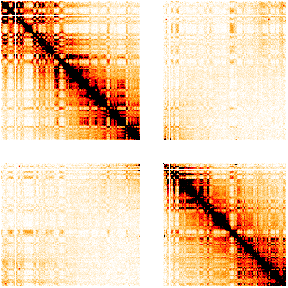

This vignette explores more thoroughly some aspects of our work that might be overlooked in the other vignettes or in our paper. In particular, we will
If you‚Äôve come here for the details, you‚Äôre in the right place üôÇ
This Section supplements our Analysis of Single Cell ATAC-seq Data vignette.
Adapted from two review papers, Dixon et al. (2016) appearing in Molecular Cell and Szabo et al. (2019) appearing in Science Advances.
To understand TADs, we must first understand how a eukaryotic genome organises itself in space. Scientists already proposed, more than one hundred years ago, that chromosomes in “resting” interphase nuclei (i.e., not undergoing division) exist as chromosome territories. The figure below shows the writing of the late 19th century German zoologist Theodor Boveri, in which he described the looping of chromosomes amongst other ideas he had about “chromosome individuality.”
Obtained from Boveri (1909), available freely through the Biodiversity Heritage Library.
Similar to how chromosomes in the genome organise themselves territorially, each chromosome also has its own organisation, also referred to as chromosome folding. Within each chromosome are histone proteins, around which DNA is wound. Such compact DNA-histone complexes are called chromatin. The degree of packing of these complexes (i.e., how tightly compact or loose) is a dynamic process that depends on the stage of the cell cycle the cell is at.
Recent technologies have allowed the quantification of the folding patterns described above. Notably, chromosome conformation capture methods like Hi-C (Lieberman-Aiden et al., 2009) have uncovered folding patterns across different scales, measured through interactions (chromosomal contact frequencies). Here are two notable patterns:
The figure below provides a visualisation of these folding patterns.
Hierarchical folding of the eukaryotic genome. (A) Many levels of chromatin folding, from the finest (DNA-histone association) to the coarsest (segregation of chromatin into active and repressed compartments). Each chromosome occupies its own territory within the nucleus. (B) Schematic representation of Hi-C maps at different genomic scales, reflecting different layers of high-order chromosome folding. Genomic coordinates are indicated along both axes. Figure reproduced from Szabo et al. (2019) under the Creative Commons Attribution NonCommercial (CC-BY-NC) license.
Hi-C experiments measure contact frequencies across the genome, thus allowing scientists to identify TADs, which are the chromatin regions more frequently interacting within themselves than among each other. Before we discuss quantitative methods, it will be useful to see what our data looks like. Below, we load Hi-C contact maps obtained from human fibroblast cells (IMR90), as reported in Dixon et al. (2012). The reason our data is named hic_imr90_40 is that the Hi-C contact reads are binned at \(40,000\) bp resolution; this means that read counts are combined across genomic regions of length \(40,000\) bp.
## Load libraries
library(tidyverse)
require(HiTC) # install using Bioconductor if not installed
require(HiCDataHumanIMR90) # install using Bioconductor if not installed
## Load data
data(Dixon2012_IMR90)
## Preview data
# What type of object is it, and how large?
class(hic_imr90_40)
#> [1] "HTClist"
#> attr(,"package")
#> [1] "HiTC"
object.size(hic_imr90_40)
#> 1209797816 bytes
# What does a Hi-C map look like?
hic_imr90_40$chr1chr1@intdata[11:20,11:20]
#> 10 x 10 sparse Matrix of class "dsCMatrix"
#>
#> 11 . . . . . . . . . .
#> 12 . 2 . . . . . . . .
#> 13 . . 22 2 . . . . . 1
#> 14 . . 2 2206 456 . . . 2 1
#> 15 . . . 456 42 . . . . 1
#> 16 . . . . . 40 . . 2 1
#> 17 . . . . . . 54 1 1 6
#> 18 . . . . . . 1 532 10 9
#> 19 . . . 2 . 2 1 10 920 18
#> 20 . . 1 1 1 1 6 9 18 1240
# How are Hi-C features labeled?
head(hic_imr90_40$chr1chr1@xgi)
#> GRanges object with 6 ranges and 1 metadata column:
#> seqnames ranges strand | name
#> <Rle> <IRanges> <Rle> | <character>
#> 1 chr1 1-40000 * | 1
#> 2 chr1 40001-80000 * | 2
#> 3 chr1 80001-120000 * | 3
#> 4 chr1 120001-160000 * | 4
#> 5 chr1 160001-200000 * | 5
#> 6 chr1 200001-240000 * | 6
#> -------
#> seqinfo: 1 sequence from an unspecified genome; no seqlengthsFor the rest of this vignette we restrict to Chromosomes 1 and 2, consistent with what we report in our paper. As part of pre-processing, we perform the following steps, as described in Sections 4 and 5.3 of the HiTC vignette.
## Restrict Hi-C data to chr1 and chr2
sset <- reduce(hic_imr90_40, chr=c("chr1", "chr2"))
## Bin contact frequencies
imr90_500 <- HTClist(mclapply(sset, binningC,
binsize=500000,
bin.adjust=FALSE,
method="sum",
step = 1))
## Perform ICE normalization
imr90_500_ICE <- normICE(imr90_500, max_iter=1000) # converged at iteration 764
## Visualise transformed output of contact map
mapC(HTClist(imr90_500_ICE$chr1chr1), trim.range=.95,
col.pos=c("white", "orange", "red", "black"))
We are now ready to identify TADs on our pre-processed dataset. As mentioned earlier, TADs are distinguished by intra-regional increase in interactions and inter-regional scarcity of interactions. We see this in the heat map above and can heuristically define TADs by inspection. However, to identify TADs in an automated fashion, we need systematic algorithms.
Here, we introduce two such systematic approaches. The first approach, called domainCaller, uses the Directionality Index (DI) to call TADs. Let the set of all \(40,000\) bp resolution counts be \(\mathscr{X}\). For each bin of contact frequencies \(x\in\mathscr{X}\), let \[\begin{equation*} \text{DI}(x) = \left(\frac{B(x) - A(x)}{|B(x) - A(x)|}\right) \left(\frac{(A(x) - E(x))^2}{E(x)} + \frac{(B(x) - E(x))^2}{E(x)}\right), \end{equation*}\] where
What domainCaller does is the following.
In Step 2 and Step 3, the HMM used is a three-state model (upstream bias, downstream bias, and no bias) with transition probabilities between successive bins. Details of this HMM can be found in Supplementary Figure 28 of Dixon et al. (2012).
One subtlety about TAD calling in Step 3: rather than inferring domains only, both domains and boundaries are inferred. A domain is initiated at the beginning of a single downstream biased state, and ends with the last state that is upstream biased. Regions between domains are classified as topological boundaries.
Fortunately, Hi-TC has made available the output of running domainCaller on our dataset. This is useful for us to gain intuition about what TADs look like, in preparation for the second approach we will introduce. Below, we load the domainCaller output.
## Inspect domainCaller output
tads_imr90@ranges
#> IRanges object with 2338 ranges and 0 metadata columns:
#> start end width
#> <integer> <integer> <integer>
#> TAD-1 770138 1290137 520000
#> TAD-2 1290138 1850140 560003
#> TAD-3 1850141 2330140 480000
#> TAD-4 2330141 3610140 1280000
#> TAD-5 3770141 6077413 2307273
#> ... ... ... ...
#> TAD-2334 146992309 148552096 1559788
#> TAD-2335 148592096 149929342 1337247
#> TAD-2336 149929343 151969344 2040002
#> TAD-2337 152089345 152746806 657462
#> TAD-2338 152786807 154946806 2160000
## Inspect number of TADs called in each chromosome
tads_imr90@seqnames
#> factor-Rle of length 2338 with 23 runs
#> Lengths: 236 186 159 133 145 131 ... 63 58 34 27 86
#> Values : chr1 chr2 chr3 chr4 chr5 chr6 ... chr19 chr20 chr21 chr22 chrX
#> Levels(23): chr1 chr2 chr3 chr4 chr5 chr6 ... chr18 chr19 chr20 chr21 chr22 chrXThe second approach to calling TADs is TopDom. Proposed by Shin et al. (2016), TopDom relies on a bin signal statistic to identify TADs. For each bin \(x\in\mathscr{X}\), let \[\begin{equation*} \text{binSignal}(x) = \frac{1}{w^2} \sum_{\ell=1}^w \sum_{m=1}^w \text{cont.freq}(U_x(\ell), U_x(m)), \end{equation*}\] where
As the formula suggests, \(\text{binSignal}\) computes the average contact frequency between upstream and downstream regions. See the Figure below for a visualisation.
Denoting the bin \(x\) by its index \(i\), \(\text{binSignal}(i)\) is the average contact frequency between an upstream and a downstream chromatin region (\(U_i\) and \(D_i\)) in a window of size \(2w\) surrounding the bin. Its value is relatively high if bin \(i\) is located inside a TAD (red diamond), and reaches a local minimum at a TAD boundary. Figure adapted from Shin et al. (2016) under the Creative Commons Attribution NonCommercial (CC-BY-NC) license.
After computing bin signals for each bin, there is still a need to distinguish true local minima from false minima. To accomplish this, a sequential polygonal approximation technique is used to fit a smooth curve to the binsignal vs bin index graph. See the Figure below for a visualisation.
Turning points (blue circles) are identified in the original curve (black), and dominant local minima (red inverted triangles) are detected by fitting a piecewise linear curve (sequential polygonal approximation). Figure adapted from Shin et al. (2016) under the Creative Commons Attribution NonCommercial (CC-BY-NC) license.
Finally, to assign TAD boundaries, an additional Wilcoxon rank sum test is performed on the local minima selected.
Below, we demonstrate performing these steps on Chromosome 1 of the IMR90 dataset. We use a recent packaged version of TopDom, provided by Bengtsson et al. (2020).
## Load package
# install.packages("TopDom")
library(TopDom)
## Convert to format readable by TopDom::TopDom
# 1. Make imr90_500_ICE into N x (N + 3) dataframe
# We use the multiple assignment function, %<-%, provided by zeallot
library(zeallot)
df <- data.frame(chr = character(),
start = numeric(),
end = numeric())
for (i in 1:length(colnames(imr90_500_ICE$chr1chr1@intdata))) {
c(chr_, start_, end_) %<-%
strsplit(colnames(imr90_500_ICE$chr1chr1@intdata)[i], "\\:|\\-")[[1]]
df <- rbind(df,
data.frame(chr = chr_,
start = as.numeric(start_),
end = as.numeric(end_)))
}
topdom_input_500k <- cbind(df, as.matrix(imr90_500_ICE$chr1chr1@intdata))
rownames(topdom_input_500k) <- c()
colnames(topdom_input_500k) <- NULL
topdom_input_500k[,2] <- topdom_input_500k[,2] - 1
# What's the dimension of the newly formatted object?
dim(topdom_input_500k) # it's N x (N+3)
#> [1] 499 502
# What does it look like?
topdom_input_500k[1:6,1:10]
#>
#> 1 chr1 0 500000 0 0.00000 0.00000 0.0000 0.0000 0.00000
#> 2 chr1 500000 1000000 0 87119.73960 2201.44935 447.1085 141.7870 51.78014
#> 3 chr1 1000000 1500000 0 2201.44935 83144.23061 2036.0001 292.8696 89.12919
#> 4 chr1 1500000 2000000 0 447.10847 2036.00013 72933.3532 2894.1141 334.83724
#> 5 chr1 2000000 2500000 0 141.78698 292.86960 2894.1141 69802.3718 1759.64596
#> 6 chr1 2500000 3000000 0 51.78014 89.12919 334.8372 1759.6460 67023.35607
#>
#> 1 0.00000
#> 2 85.59758
#> 3 80.36681
#> 4 511.94974
#> 5 2209.51332
#> 6 4972.33528
# 2. Save as tab-delimited file
rel_dir <- "ex_data/scATAC-seq/"
#write.table(topdom_input_500k, file = paste0(rel_dir, "500k_topdom_input.tsv"),
# row.names = FALSE,
# col.names = FALSE,
# sep="\t")
# 3. Load the file and find TADs with TopDom
# TopDom performs the steps described above
topdom_res <- TopDom::TopDom(paste0(rel_dir, "500k_topdom_input.tsv"), window.size = 5L)
# 4. View results
# What are the p-values?
head(topdom_res$binSignal)
#> id chr from.coord to.coord local.ext mean.cf pvalue
#> 1 1 chr1 0 500000 -0.5 0.0000 1.0000000000
#> 2 2 chr1 500000 1000000 0.0 292.7723 0.1791632334
#> 3 3 chr1 1000000 1500000 -1.0 225.5417 0.0002454393
#> 4 4 chr1 1500000 2000000 0.0 256.5692 0.0001367633
#> 5 5 chr1 2000000 2500000 0.0 311.2212 0.0009546703
#> 6 6 chr1 2500000 3000000 0.0 662.2543 0.1389660413
# Which blocks are classified as TADs by TopDom?
head(topdom_res$bed[which(topdom_res$bed$name == "domain"), ])
#> chrom chromStart chromEnd name
#> 6 chr1 500000 1500000 domain
#> 7 chr1 1500000 6500000 domain
#> 8 chr1 6500000 11000000 domain
#> 10 chr1 12000000 13000000 domain
#> 11 chr1 13500000 15500000 domain
#> 12 chr1 15500000 19500000 domainTo conclude this section, we look at the distribution of classification categories (not just TADs), as well as the distribution sizes (block lengths) of TADs.
## Look at distribution of classification results
kableExtra::kable(table(topdom_res$bed$name),
col.names = c("Category", "Count"))| Category | Count |
|---|---|
| boundary | 6 |
| domain | 44 |
| gap | 5 |
## Look at distribution of size of TADs
chr1_tads <- topdom_res$domain[which(topdom_res$domain$tag =="domain"), ]
kableExtra::kable(table(chr1_tads$size / 5e5),
col.names = c("Size (x 5e5 bases)", "Count"))| Size (x 5e5 bases) | Count |
|---|---|
| 2 | 4 |
| 4 | 2 |
| 5 | 6 |
| 6 | 3 |
| 7 | 4 |
| 8 | 5 |
| 9 | 6 |
| 10 | 4 |
| 11 | 1 |
| 15 | 1 |
| 16 | 1 |
| 18 | 1 |
| 20 | 1 |
| 21 | 1 |
| 24 | 1 |
| 26 | 2 |
| 29 | 1 |
Note we use these classified TADs to group our scATAC-seq features.
Our test of exchangeability works for settings where only pairwise distance data is available. Given a list of pairwise distances between \(N\) individuals, \(\{D_1,\ldots,D_B\}\), and assuming these distances are independent of one another, our test can determine whether the individuals making up the \(N\)-sample are exchangeable at a user-specified significance threshold (e.g., \(\alpha=0.05\)). (See Section of our paper.)
There are multiple practical scenarios well suited for such an approach.
Below, we show how our method can be called on a list of distances, provided the features from which the pairwise distances are derived are mutually independent. Briefly, we have \(N=100\) individuals from whom we obtain \(50\) pairwise distance data, \(\{D_1,\ldots,D_{50}\}\). Each pairwise distance matrix \(D_b\) is computed from a block of \(10\) features, and we assume each block is independent of any other block.
## Simulation of list of distances
# Set seed for reproducibility
set.seed(2021)
# Generate data
N <- 100
num_rows <- choose(N,2)
B <- 50
dist_list <- list()
for (b in 1:B) {
# Generate fake data
if (b <= B/2) {
fake_samples <- replicate(10, rbinom(N,1,0.5))
fake_dist <- as.matrix(dist(fake_samples, method = "manhattan"))
} else {
fake_samples <- replicate(10, rnorm(N, sd = 10))
fake_dist <- as.matrix(dist(fake_samples, method = "euclidean"))
}
# Add to list
dist_list[[b]] <- fake_dist
}
# Clear garbage
gc()
#> used (Mb) gc trigger (Mb) limit (Mb) max used (Mb)
#> Ncells 14068868 751.4 24208967 1292.9 NA 24208967 1292.9
#> Vcells 885563685 6756.4 1600378470 12210.0 16384 1600348721 12209.7We now run our test of exchangeability on the list of distances.
## Apply test of exchangeability to simulated distance list
library(flintyR)
library(doParallel)
# Register parallel computation
registerDoParallel()
# Compute p-value
distDataPValue(dist_list) # should be >= 0.05
#> [1] 0.384For users who prefer to run jobs from the terminal, we describe how to embed our test within “terminal-friendly” scripts. To facilitate our exposition, we use data from the 1000 Genomes (1KG) project (The 1000 Genomes Project Consortium, 2015). The 1KG data consists of individual genomes spanning 26 populations and 5 superpopulations. You may learn more about, and see some preliminary analyses of, the data here. If you are a geneticist, you probably already know more interesting analyses of this data.
The challenge here is that genomes are typically provided in VCF or BIM/BED/FAM or PGEN/PVAR/PSAM format. Moreover, they can be very large and thus cannot be loaded in memory.
Suppose our task at hand is to run a test of exchangeability on each 1KG population. There are millions of polymorphic variants, and we assume variants lying in different chromosomes are independent of one another. Since there are 22 autosomal chromosomes, this means that our features are grouped into 22 large blocks.
To accomplish our task, we perform the following steps.
Scripts that perform the steps above can be found in our Github repo, along with guidance on reproducing our results.
Just to demonstrate a concrete implementation of the embedding approach and the scripts prepared above, we report \(p\)-values obtained by running our test on two versions of the 1KG data differing in the variants included.
read_1000G function of the bigsnpr package) Only biallelic variants that have minor allele frequency at least \(0.01\) in the 1KG dataset are included.Note that the analysis for the first scenario is as described in our Github repo.
We find that when using only common variants, all populations, except for the Yoruban population in Nigeria, are non-exchangeable at \(\alpha=0.05\) level. However, when additional rare variants are included, all populations are non-exchangeable at \(\alpha=0.05\).
## Print table summarising results
kableExtra::kable(data.table::fread("exchangeability_results.txt"))| POP | DESC | MAF1e-2 | MAC1 |
|---|---|---|---|
| GBR | British in England and Scotland | 0.00 | 0.000 |
| FIN | Finnish in Finland | 0.00 | 0.000 |
| CHS | Southern Han Chinese, China | 0.00 | 0.000 |
| PUR | Puerto Rican in Puerto Rico | 0.00 | 0.000 |
| CDX | Chinese Dai in Xishuangbanna, China | 0.00 | 0.000 |
| CLM | Colombian in Medellin, Colombia | 0.00 | 0.000 |
| IBS | Iberian populations in Spain | 0.00 | 0.000 |
| PEL | Peruvian in Lima, Peru | 0.00 | 0.000 |
| PJL | Punjabi in Lahore,Pakistan | 0.00 | 0.000 |
| KHV | Kinh in Ho Chi Minh City, Vietnam | 0.00 | 0.000 |
| ACB | African Caribbean in Barbados | 0.00 | 0.000 |
| GWD | Gambian in Western Division, The Gambia | 0.00 | 0.000 |
| ESN | Esan in Nigeria | 0.00 | 0.000 |
| BEB | Bengali in Bangladesh | 0.00 | 0.000 |
| MSL | Mende in Sierra Leone | 0.00 | 0.000 |
| STU | Sri Lankan Tamil in the UK | 0.00 | 0.000 |
| ITU | Indian Telugu in the UK | 0.00 | 0.000 |
| CEU | Utah residents with Northern and Western European ancestry | 0.00 | 0.000 |
| YRI | Yoruba in Ibadan, Nigeria | 0.07 | 0.022 |
| CHB | Han Chinese in Bejing, China | 0.00 | 0.000 |
| JPT | Japanese in Tokyo, Japan | 0.00 | 0.000 |
| LWK | Luhya in Webuye, Kenya | 0.00 | 0.000 |
| ASW | African Ancestry in Southwest US | 0.00 | 0.000 |
| MXL | Mexican Ancestry in Los Angeles, California | 0.00 | 0.000 |
| TSI | Toscani in Italy | 0.00 | 0.000 |
| GIH | Gujarati Indian in Houston,TX | 0.00 | 0.000 |
Thus, our test shows that most populations in the 1KG dataset are non-exchangeable, assuming variants lying in different chromosomes are independent of one another. In the only exception of the Yoruban population (YRI), we find that if only common variants are considered, then the individuals are exchangeable. However, once rare variants are included the individuals lose exchangeability. This observation is consistent with the importance of rare variants capturing recent demographic history, a point acknowledged by population geneticists (Zaidi and Mathieson, 2021).